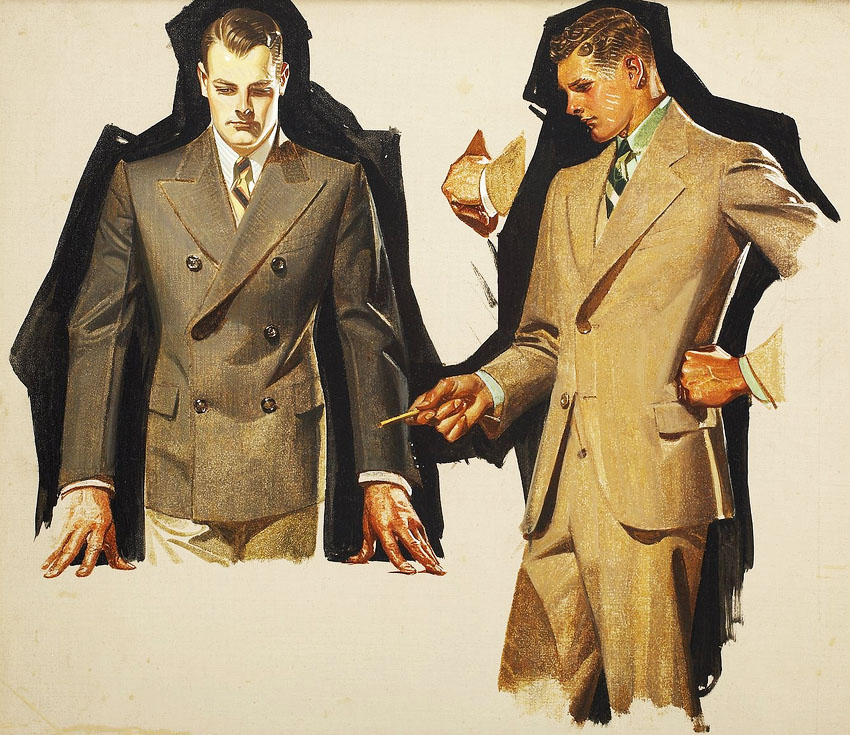

The Personal life about J.C. Leyendecker
Many biographers have speculated on J. C. Leyendecker's sexuality, often attributing the apparent homoerotic aesthetic of his work to a homosexual identity. Without question, Leyendecker excelled at depicting male homosocial spaces (locker rooms, clubhouses, tailoring shops) and extraordinarily handsome young men in curious poses or exchanging glances. Moreover, Leyendecker never married, and he lived with another man, Charles Beach, for much of his adult life, who is assumed to have been his lover and who was the original model of the famous Arrow Collar Man.

While Beach often organized the famous gala-like social gatherings that Leyendecker was known for in the 1920s, he apparently also contributed largely to Leyendecker's social isolation in his later years. Beach reportedly forbade outside contact with the artist in the last months of his life.
Due to his fame as an illustrator, Leyendecker was able to indulge in a very luxurious lifestyle which in many ways embodied the decadence of the Roaring Twenties. However, when commissions began to wane in the 1930s, he was forced to curtail spending considerably. By the time of his death, Leyendecker had let all of the household staff at his New Rochelle estate go, with he and Beach attempting to maintain the extensive estate themselves. Leyendecker left a tidy estate equally split between his sister and Beach.